Chapter 5 Results
In this section we will explore deeper into the management of NYC tree ecosystem. We will discuss and identify potnetial problems through data visualizations in aspects such as tree diversity, tree health, tree size and the surrounding structure of trees.
Tree Diversity:
First of all, let’s take a look at the changing patterns of the 5 most popular tree species across NYC boroughs in 1995, 2005 and 2015, since they occupy a significant portion of the overall tree diversity system. The most prevalent tree species remain the same throughout the three periods, namely, Normway Maple, London Planetree, Pin Oak, Honeylocust, and Callery Pear. We can see that from 1995 to 2015, the quantity of Norway Maple falls substantially from over 100000 to less than 37000. Looking at the distribution across boroughs, we see that Manhattan has very few Norway Maple and most of the reduction comes from Queens. The amount and distribution of London Planetree remain relatively stable across all three periods as compared to other types. Pin Oak, Honeylocust and Callery Pear all increase substantially in number from 1995 to 2015, indicating healthy growth and polination. However, it should be noted that while Callery Pear boomed at the fastest rate from 1995 to 2005, it actually fell a little in quantity from 2005 to 2015. Therefore, more investigation is needed to identify possible growth-detering factors such as plant diseases.
## # A tibble: 276 x 2
## Species n
## <chr> <int>
## 1 MAPLE, NORWAY 109321
## 2 LONDON PLANETREE 88040
## 3 OAK, PIN 36553
## 4 HONEYLOCUST 33727
## 5 PEAR, CALLERY 31293
## 6 LINDEN, LITTLE LEAF 26489
## 7 MAPLE, SILVER 22347
## 8 MAPLE, RED 17993
## 9 ASH, GREEN 17684
## 10 MAPLE, SUGAR 15355
## # … with 266 more rows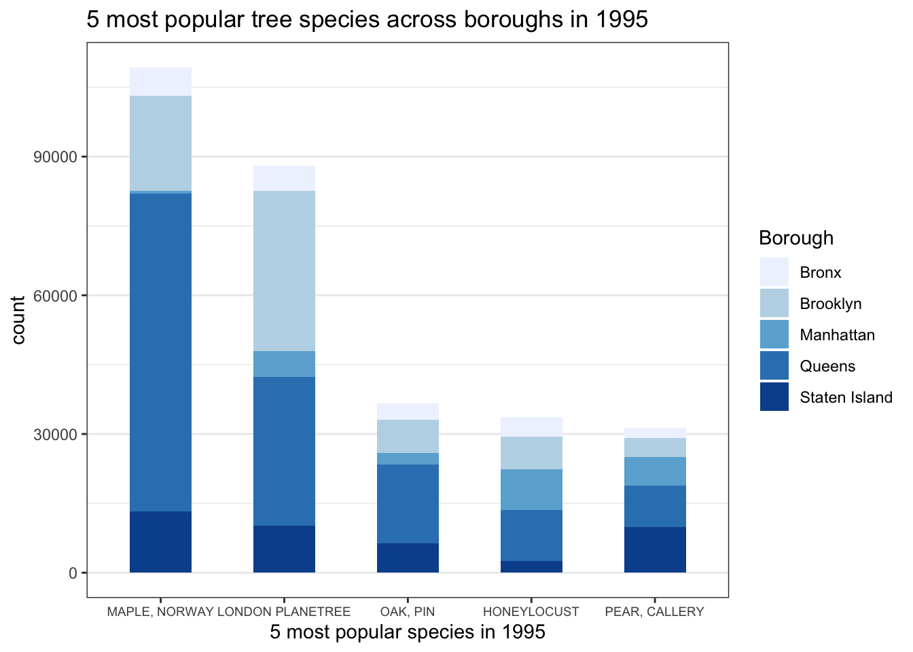
## # A tibble: 169 x 2
## Species n
## <chr> <int>
## 1 LONDON PLANETREE 89529
## 2 MAPLE, NORWAY 74721
## 3 PEAR, CALLERY 63593
## 4 HONEYLOCUST 52191
## 5 OAK, PIN 43895
## 6 LINDEN, LITTLE LEAF 27664
## 7 ASH, GREEN 20624
## 8 MAPLE, RED 20254
## 9 MAPLE, SILVER 18666
## 10 UNKNOWN 18362
## # … with 159 more rows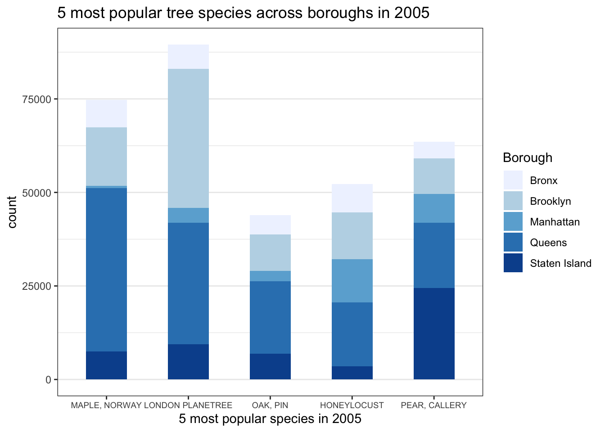
## # A tibble: 133 x 2
## Species n
## <chr> <int>
## 1 LONDON PLANETREE 87014
## 2 HONEYLOCUST 64264
## 3 PEAR, CALLERY 58931
## 4 OAK, PIN 53185
## 5 MAPLE, NORWAY 34189
## 6 <NA> 31619
## 7 littleleaf linden 29742
## 8 cherry 29279
## 9 Japanese zelkova 29258
## 10 ginkgo 21024
## # … with 123 more rows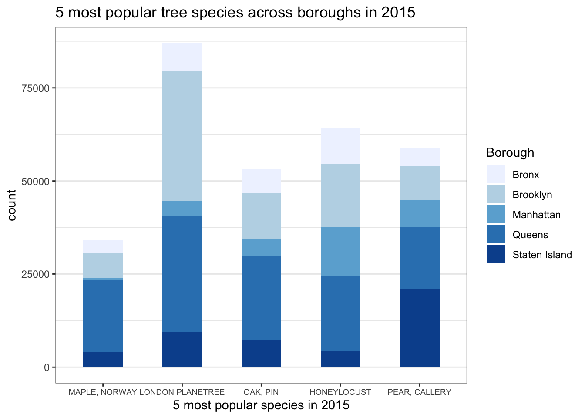
Next, we look at the ratio of those most popular tree species against all tree species in each zip code area. Due to the limit of 1995 collected data, the plot of year 1995 fails to show the distribution clearly. Therefore, we analyze the changing patterns in these diversity ratios through 2005 and 2015. Since darker colors indicate higher species diversity in the area, tree diversity has increased in almost all areas on the map over these two periods. This trend is especially salient in the central part(Brooklyn and Queens) of the map. 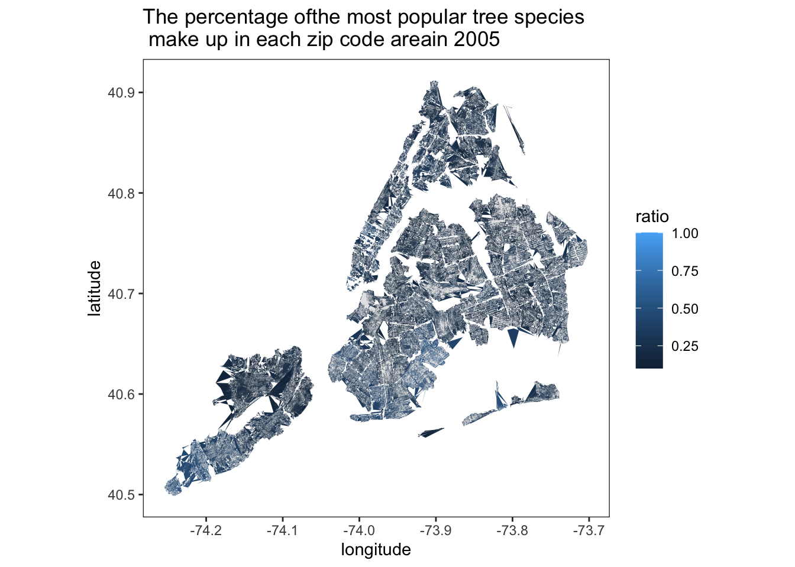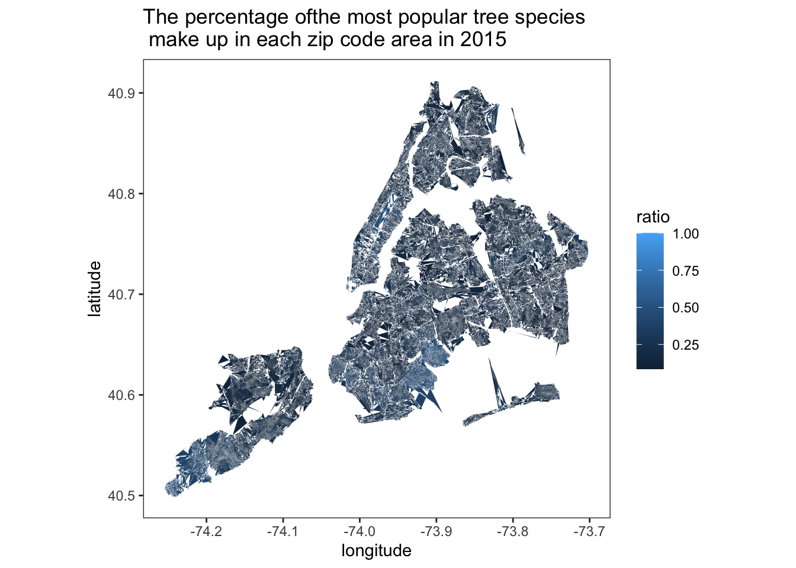
Tree Health:
Next, we investigate the health conditions of trees across boroughs over the three periods. The result is quite promising. As the animation g1 suggests, the proportion of trees in a good condition in all regions has increased, while the proportion of trees with a poor condition in all regions has decreased. Additionally, we would like to focus on the ratio of sick trees. As the animation suggests, Queens has the highest density of sick trees in 1996 and Bronx has the highest density of sick tress in 2005. But in 2015, Manhattan has the highest density of sick trees. Manhattan also has the lowest ratio of healthy trees in the most recent 2015 survey. Therefore, more attention needs to be given to the tree management and maintenance in Manhattan particularly. 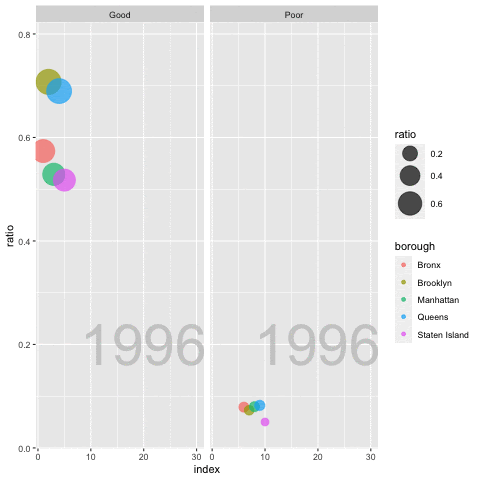
Furthermore, to better grasp the conditions of trees in different zip code areas. The next graph plots the density of sick trees against the amount of the trees in each zip city in 2005 and 2015. Overall, the total number of trees has increased across regions, while the percentage of bad trees has decreased, especially in Brooklyn. One should not assume obvious linear relationship between the density of sick trees and the amount of trees in certain zip city. That’s to say, the proportion of sick trees is not necessarily low in places with few trees, such as in Breezy Point. And areas with large amount of trees such as Bronx can have remarkably low density of sick trees. 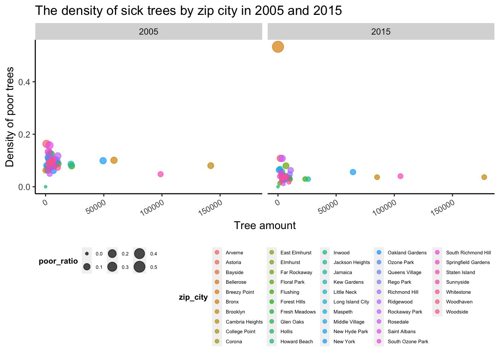
Moreover, to get a clearer sense of the distribution of the trees in poor health conditions, the following plot shows the percentage of trees with a condition of poor status in each zip city in 2015. This not only can tell us which areas need to make more efforts in maintenance, but also can serve as an indicator of locations of trees that might pose dangers to pedestrians. Since lighter colors indicate higher percentage, Brooklyn will face the most danger from unhealthy trees. Staten Island will also face much more threats from unhealthy trees compared with other areas. 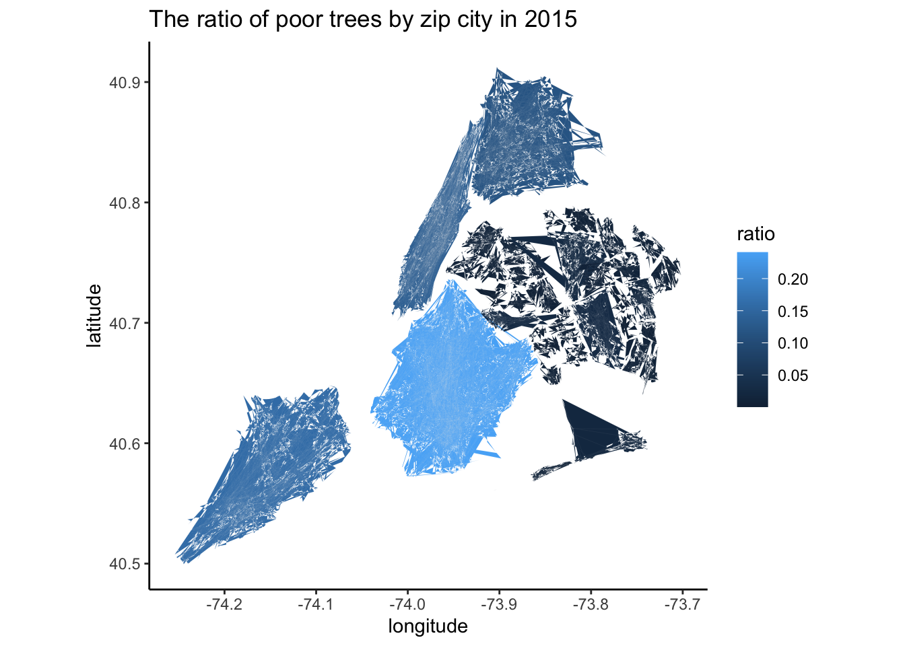
Tree Size:
This project will also take a glimpse at the sizes of trees measured in terms of diameter ta breast height. Large tree species can exert more potential effects on our urban environment, especially in a densely populated metropolitan like NYC. Therefore, it is important to identify these specific large types since they can potentially produce more beneficial or harmful effects. In the following plot, we filter out 4 species with the largest average diameters in 1995, 2005, 2015. Apparently, each survey year has mostly different tree species with the largest average diameters. In the most recent year, London Planetree, Silver Maple, Eastern Cottonwood and Pin Oak possess the largest sizes. Hence, more attention should be given to these species in terms of their possible impacts on people’s daily lives. In addition, there is a decreasing trend in the largest average size over three periods. This possibly means that the trees in NYC are becoming increasingly diversified and evenly spread. However, much more detailed comparison studies are needed to derive any conclusion. 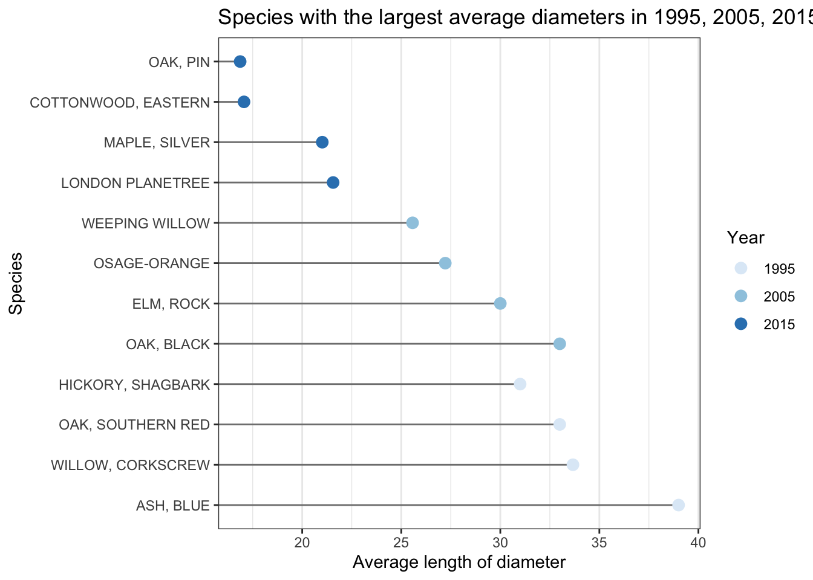
Again, just as in the tree health section, we plot the ratio of trees larger than 20 in diameter by zip city in 2015, This not only tells us where to put extra attention to these large species, but also can serve a reminder of locations where large trees might create risks to pedestrians. 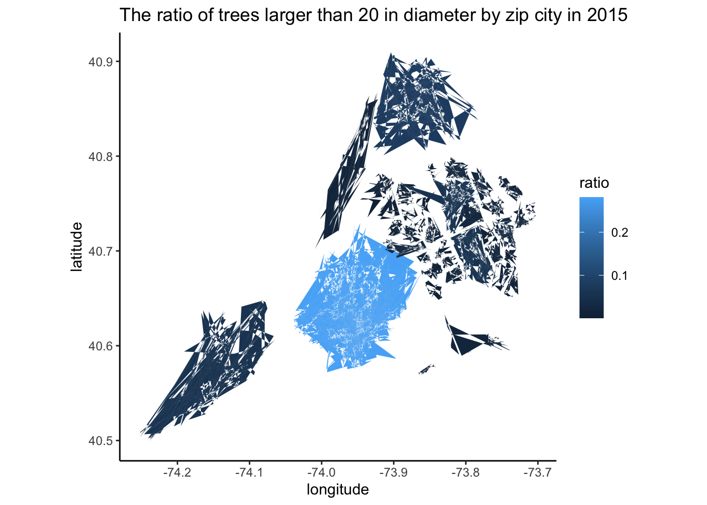
Surrounding structure of trees:
Last but not least, we investigate the conditions of the surrounding structures of the trees to figure out how to better manage NYC tree ecosystem. These structures include sidewalks, guards, supports, wires, canopies and so much more. In this project, we select the sidewalks and guards to disucss their relationships with the tree system. For the conditions of sidewalk, as seen in the plot below, there is slight decrease in the number of good sidewalk but a marked increase in the number of sidewalks in damaged conditions. These could be caused by other factors such as weather. But the proximity to trees means that most likely it is casued by the expansion of root growth. Therefore, this indicates that government ought to act on maintaining the sidewalks, especially in Brooklyn and Queens to prevent future injuries. 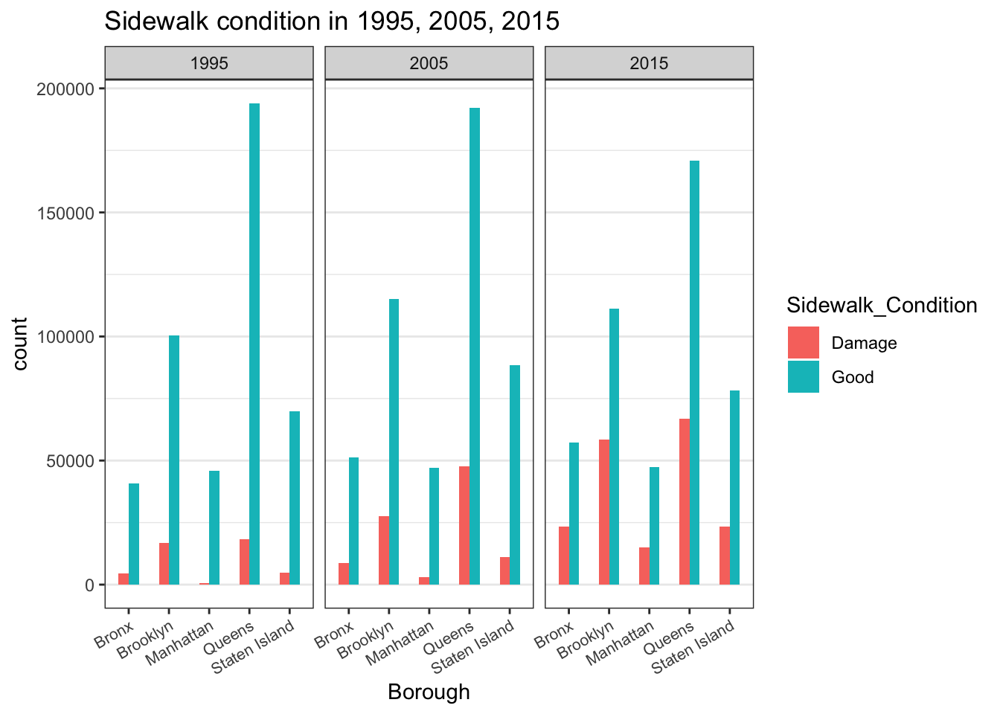
Tree guards’ relationship with trees is rather mixed. These guards include preimeter guard, stakes or even wires. They may be put there for the benefits of trees or not. Hence, from the graphs, there might not be any direct link between the two. Yet, it is noteworthy that in 2005, the presence of guards actually corresponds to a higher proportion of trees in poor health condition. This reminds people of the harms of artificial constraints might have on tree species. 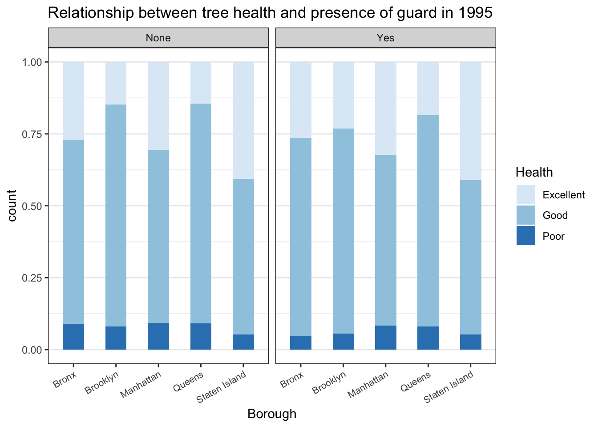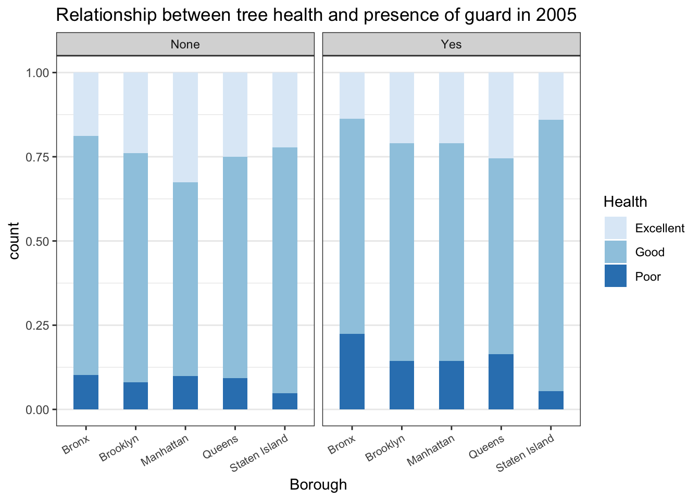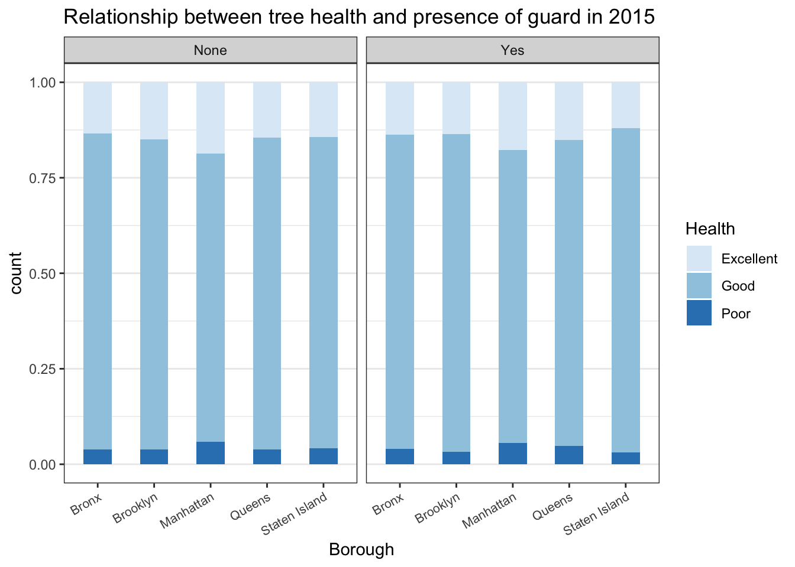